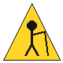

Single Speed Arizona
2027 — The Sequel
2027 — The Sequel


This site is ALWAYS under construction. Like the trail. Like your life.
You are visitor #
(we counted. we always count.)

Best viewed in Netscape Navigator at 800×600.
Sound on. Pants on.
Sound on. Pants on.